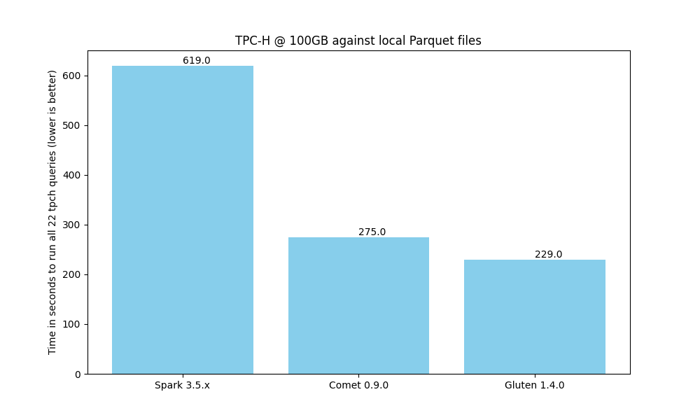

Comparison of Comet and Gluten¶
This document provides a comparison of the Comet and Gluten projects to help guide users who are looking to choose between them. This document is likely biased because it is maintained by the Comet community.
We recommend trying out both Comet and Gluten to see which is the best fit for your needs.
This document is based on Comet 0.9.0 and Gluten 1.4.0.
Architecture¶
Comet and Gluten have very similar architectures. Both are Spark plugins that translate Spark physical plans to a serialized representation and pass them to native code for execution.
Gluten serializes the plans using the Substrait format and has an extensible architecture that supports execution against multiple engines. Velox and Clickhouse are currently supported, but Velox is more widely used.
Comet serializes the plans in a proprietary Protocol Buffer format. Execution is delegated to Apache DataFusion. Comet does not plan to support multiple engines, but rather focus on a tight integration between Spark and DataFusion.
Underlying Execution Engine: DataFusion vs Velox¶
One of the main differences between Comet and Gluten is the choice of native execution engine.
Gluten uses Velox, which is a vectorized query engine implemented in C++ and is maintained by Meta.
Comet uses DataFusion, which is a vectorized query engine implemented in Rust and is maintained by the Apache Software Foundation.
Velox and DataFusion are both mature query engines that are growing in popularity.
Comet may be a better choice for users with plans for integrating with other Rust software in the future, and Gluten+Velox may be a better choice for users with plans for integrating with other C++ code.

Compatibility¶
Comet relies on the full Spark SQL test suite (consisting of more than 24,000 tests) as well its own unit and integration tests to ensure compatibility with Spark. Features that are known to have compatibility differences with Spark are disabled by default, but users can opt in. See the Comet Compatibility Guide for more information.
Gluten also aims to provide compatibility with Spark, and includes a subset of the Spark SQL tests in its own test suite. See the Gluten Compatibility Guide for more information.
Performance¶
When running a benchmark derived from TPC-H on a single node against local Parquet files, we see that both Comet and Gluten provide a good speedup when compared to Spark. Gluten is currently slightly faster than Comet, but we expect to close that gap over time.

Ease of Development¶
Comet has a much smaller codebase than Gluten. A fresh clone of the respective repositories shows that Comet has ~41k lines of Scala+Java code and ~40k lines of Rust code. Gluten has ~207k lines of Scala+Java code and ~89k lines of C++ code.
Setting up a local development environment with Comet is generally easier than with Gluten due to Rust’s package management capabilities vs the complexities around installing C++ dependencies.
Comet Lines of Code¶
-------------------------------------------------------------------------------
Language files blank comment code
-------------------------------------------------------------------------------
Rust 159 4870 5388 39989
Scala 171 4849 6277 32538
Java 66 1556 2619 8724
Gluten Lines of Code¶
--------------------------------------------------------------------------------
Language files blank comment code
--------------------------------------------------------------------------------
Scala 1312 23264 37534 179664
C++ 421 9841 10245 64554
Java 328 5063 6726 26520
C/C++ Header 304 4875 6255 23527
Summary¶
Comet and Gluten are both good solutions for accelerating Spark jobs. We recommend trying both to see which is the best fit for your needs.